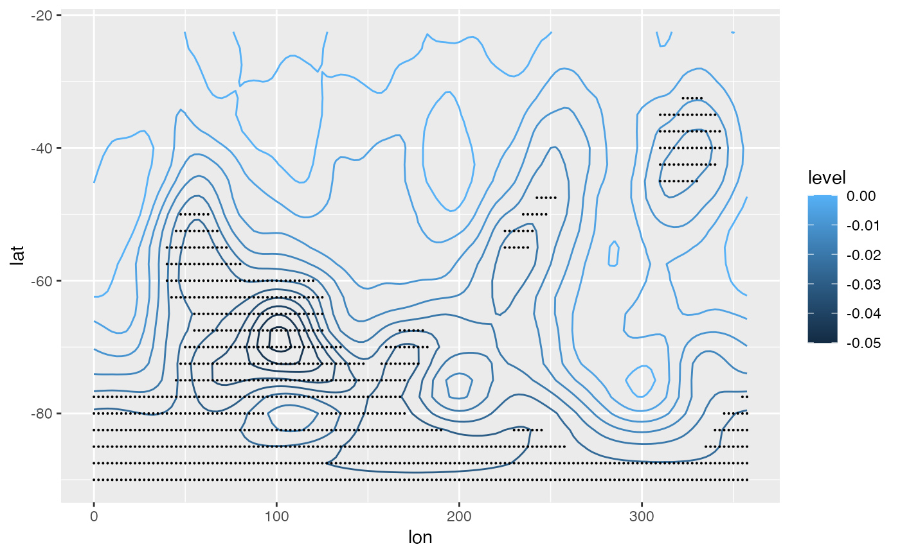

Computes a linear regression with stats::.lm.fit and returns the estimate and, optionally, standard error for each regressor.
FitLm(y, ..., weights = NULL, se = FALSE, r2 = se) ResidLm(y, ..., weights = NULL) Detrend(y, time = seq_along(y))
| y | numeric vector of observations to model |
|---|---|
| ... | numeric vectors of variables used in the modelling |
| weights | numerical vector of weights (which doesn't need to be normalised) |
| se | logical indicating whether to compute the standard error |
| r2 | logical indicating whether to compute r squared |
| time | time vector to use for detrending. Only necessary in the case of irregularly sampled timeseries |
FitLm returns a list with elements
the name of the regressor
estimate of the regression
standard error
degrees of freedom
Percent of variance explained by the model (repeated in each term)
r.squared` adjusted based on the degrees of freedom)
ResidLm and Detrend returns a vector of the same length
If there's no complete cases in the regression, NAs are returned with no
warning.
# Linear trend with "signficant" areas shaded with points library(data.table) library(ggplot2) system.time({ regr <- geopotential[, FitLm(gh, date, se = TRUE), by = .(lon, lat)] })#> user system elapsed #> 0.451 0.016 0.467ggplot(regr[term != "(Intercept)"], aes(lon, lat)) + geom_contour(aes(z = estimate, color = ..level..)) + stat_subset(aes(subset = abs(estimate) > 2*std.error), size = 0.05)# Using stats::lm() is much slower and with no names. if (FALSE) { system.time({ regr <- geopotential[, coef(lm(gh ~ date))[2], by = .(lon, lat)] }) }